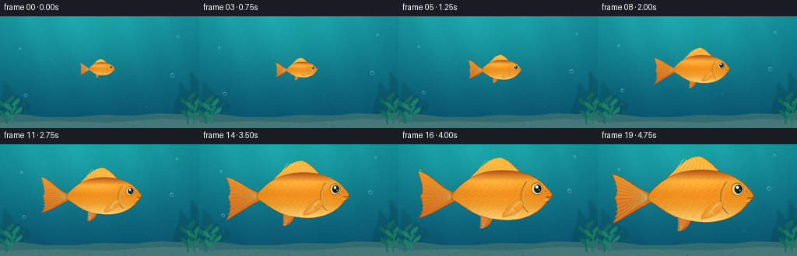
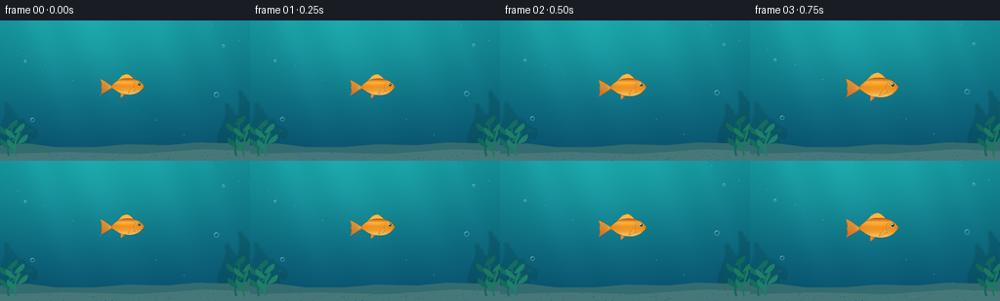

CODING AGENTS AS PIXEL WORLD MODELS
traex/GPT-6.1-Sol · instance_preservation_0050
点击播放 · 原生 RGB 像素
逐轮保存的候选
回放视频、检查图与代码变化。
每份候选均可单独播放。实际图片检查记录在下方工具轨迹中。
候选 01播放与检查图
点击播放 · 原生 RGB 像素


展开代码变化
--- 上一保存版本
+++ 本次保存版本
@@ -0,0 +1,178 @@
+from pathlib import Path
+import math
+import numpy as np
+from PIL import Image, ImageDraw, ImageFilter
+import artifact_io
+
+ROOT = Path(__file__).resolve().parent
+W, H, SS = 256, 144, 4
+WW, HH = W*SS,H*SS
+
+def bez(points, n=28):
+ p=np.array(points,float); ts=np.linspace(0,1,n)
+ if len(p)==4:
+ return [tuple((1-t)**3*p[0]+3*(1-t)**2*t*p[1]+3*(1-t)*t*t*p[2]+t**3*p[3]) for t in ts]
+ return [tuple((1-t)**2*p[0]+2*(1-t)*t*p[1]+t*t*p[2]) for t in ts]
+
+def curvepath(segs):
+ out=[]
+ for s in segs: out+=bez(s)
+ return out
+
+def bg_frame(t):
+ y,x=np.mgrid[0:HH,0:WW].astype(float); x/=SS; y/=SS
+ v=y/H
+ glow=np.exp(-((x-110)/133)**2-((y-9)/78)**2)
+ a=np.empty((HH,WW,3),float)
+ a[:,:,0]=8+9*(1-v)+9*glow
+ a[:,:,1]=77+54*(1-v)+33*glow
+ a[:,:,2]=106+36*(1-v)+24*glow
+ # Dappled shafts of surface light, soft and unobtrusive.
+ rays=np.zeros_like(x)
+ for origin,width,power in [(38,13,8),(91,20,8),(158,16,6),(207,9,5)]:
+ rays+=power*np.exp(-((x-origin-y*.34)/(width+y*.05))**2)*np.exp(-y/145)
+ a+=rays[:,:,None]*np.array([.45,.9,1.0])
+ img=Image.fromarray(np.uint8(np.clip(a,0,255))).convert('RGBA')
+ layer=Image.new('RGBA',(WW,HH)); d=ImageDraw.Draw(layer)
+ def line(p,fill,width):d.line([(int(xx*SS),int(yy*SS)) for xx,yy in p],fill=fill,width=max(1,int(width*SS)))
+ # Distant reef silhouettes.
+ for base,hei,col in [(9,50,(15,106,119,105)),(25,32,(19,114,118,110)),(235,49,(11,98,111,120)),(249,62,(10,96,107,125))]:
+ for k in range(4):
+ bx=base+(k-1.5)*4
+ pts=bez([(bx,135),(bx-12,117),(bx+11,103),(bx+3,135-hei+k*6)])
+ line(pts,col,2.6)
+ img=Image.alpha_composite(img,layer.filter(ImageFilter.GaussianBlur(1.4*SS)))
+ layer=Image.new('RGBA',(WW,HH)); d=ImageDraw.Draw(layer)
+ floor=[(0,128),(27,126),(58,130),(95,130),(130,127),(171,128),(202,125),(233,126),(256,124),(256,144),(0,144)]
+ d.polygon([(x*SS,y*SS) for x,y in floor],fill=(51,108,112,255))
+ d.polygon([(0,137*SS),(70*SS,135*SS),(140*SS,137*SS),(210*SS,132*SS),(256*SS,134*SS),(WW,HH),(0,HH)],fill=(71,120,121,255))
+ rng=np.random.default_rng(15)
+ for _ in range(100):
+ px=rng.uniform(0,256); py=rng.uniform(132,144); r=rng.uniform(.25,.8)
+ d.ellipse(((px-r)*SS,(py-r*.35)*SS,(px+r)*SS,(py+r*.35)*SS),fill=(112,155,145,80))
+ for base,h,col in [(9,33,(21,108,95,255)),(16,28,(30,128,107,255)),(242,38,(18,103,91,255)),(250,30,(28,121,96,255))]:
+ pts=bez([(base,139),(base-4,125),(base+6+math.sin(t*1.2)*1.0,117),(base+2+math.sin(t*1.2),139-h)])
+ line(pts,col,2.1)
+ for k in range(1,5):
+ py=138-k*h/5; px=base+2*math.sin(k)
+ sign=(-1)**k
+ leaf=curvepath([[(px,py),(px+sign*10,py-1),(px+sign*12,py-8),(px+sign*10,py-10)],[(px+sign*10,py-10),(px+sign*5,py-8),(px+sign*2,py-4),(px,py)]])
+ d.polygon([(xx*SS,yy*SS) for xx,yy in leaf],fill=col)
+ # Sparse drifting particles and small translucent bubbles outside the subject.
+ for i in range(22):
+ px=(i*47.37+18)%256; py=(i*23.71+31-t*1.1)%127
+ r=.25 if i%3 else .45
+ d.ellipse(((px-r)*SS,(py-r)*SS,(px+r)*SS,(py+r)*SS),fill=(186,229,223,70))
+ for bx,by,r,speed in [(32,102,2.1,3),(221,76,2.5,4),(27,42,1.3,2),(228,26,1.5,2.5)]:
+ py=(by-speed*t)%118; px=bx+1.3*math.sin(t+by)
+ d.ellipse(((px-r)*SS,(py-r)*SS,(px+r)*SS,(py+r)*SS),outline=(184,238,238,115),width=2)
+ d.arc(((px-r+.4)*SS,(py-r+.4)*SS,(px+r-.4)*SS,(py+r-.4)*SS),195,280,fill=(230,254,250,160),width=2)
+ return Image.alpha_composite(img,layer)
+
+# Local coordinates are held fixed for the entire movie: a single identifiable fish.
+BODY=curvepath([
+ [(-64,-4),(-48,-23),(-26,-36),(4,-35)],
+ [(4,-35),(36,-36),(56,-23),(66,-10)],
+ [(66,-10),(69,-7),(72,-3),(72,0)],
+ [(72,0),(71,3),(68,4),(65,7)],
+ [(65,7),(52,28),(23,36),(-3,32)],
+ [(-3,32),(-36,29),(-47,14),(-64,5)],
+ [(-64,5),(-66,2),(-66,-1),(-64,-4)]])
+
+
+def fish_frame(img, scale, t):
+ center=(130+1.5*math.sin(t*.8),68+1.4*math.sin(t*1.3))
+ def tr(p):return ((center[0]+p[0]*scale)*SS,(center[1]+p[1]*scale)*SS)
+ def points(p):return [tr(q) for q in p]
+ fish=Image.new('RGBA',img.size)
+ def gradient_shape(shape,colors,kind='fin'):
+ mask=Image.new('L',img.size); md=ImageDraw.Draw(mask); md.polygon(points(shape),fill=255)
+ y,x=np.mgrid[0:HH,0:WW].astype(float)
+ lx=(x/SS-center[0])/scale; ly=(y/SS-center[1])/scale
+ if kind=='body':
+ # Strong volume shading: a lit golden back, orange midline and ivory belly.
+ q=np.clip((ly+33)/67,0,1)
+ stops=np.array([0,.18,.44,.68,1.0])
+ pal=np.array([[191,87,21],[250,160,38],[245,143,26],[242,159,44],[255,215,126]],float)
+ rgb=np.stack([np.interp(q,stops,pal[:,c]) for c in range(3)],axis=2)
+ shade=.88+.12*np.sqrt(np.clip(1-((lx-3)/78)**2,0,1))
+ rgb*=shade[:,:,None]
+ hilite=np.exp(-((lx+10)/55)**2-((ly+20)/11)**2)
+ rgb+=hilite[:,:,None]*np.array([11,22,20])
+ else:
+ q=np.clip((ly+50)/95,0,1)
+ rgb=np.array(colors[0])[None,None,:]*(1-q[:,:,None])+np.array(colors[1])[None,None,:]*q[:,:,None]
+ rgba=np.concatenate([np.clip(rgb,0,255).astype(np.uint8),np.asarray(mask)[:,:,None]],axis=2)
+ fish.alpha_composite(Image.fromarray(rgba))
+ def stroke(p,col,width=1):
+ d=ImageDraw.Draw(fish);d.line(points(p),fill=col,width=max(1,round(width*scale*SS)),joint='curve')
+ # Long flowing forked tail, subtly flexing without changing identity.
+ wag=math.sin(t*4.1)*4.0
+ tail=curvepath([
+ [(-60,-4),(-79,-9),(-92,-28+wag),(-112,-32+wag)],
+ [(-112,-32+wag),(-105,-15),(-103,-4),(-109,0+wag*.3)],
+ [(-109,0+wag*.3),(-104,9),(-103,24),(-112,33+wag)],
+ [(-112,33+wag),(-94,27),(-75,13),(-60,6)],
+ [(-60,6),(-62,2),(-62,-1),(-60,-4)]])
+ gradient_shape(tail,[(252,154,32),(201,91,26)])
+ stroke(tail+[tail[0]],(145,69,25,230),.7)
+ for yy in np.linspace(-30,30,11):
+ endpoint=(-109+4*(1-abs(yy)/32),yy+wag*abs(yy)/32)
+ stroke(bez([(-62,1),(-82,yy*.35),(-94,yy*.72),endpoint]),(255,201,93,180),.65)
+ dorsal=curvepath([[(-45,-21),(-28,-36),(-18,-52),(1,-53)],[(1,-53),(10,-51),(20,-42),(29,-31)],[(29,-31),(0,-29),(-22,-23),(-45,-21)]])
+ gradient_shape(dorsal,[(255,186,59),(233,118,26)])
+ stroke(dorsal+[dorsal[0]],(162,86,28,240),.65)
+ for j in range(10):
+ u=j/9
+ stroke(bez([(-38+62*u,-25-6*u),(-27+48*u,-37),(-19+36*u,-49+10*u*u)]),(255,216,122,230),.65)
+ ventral=curvepath([[(-10,26),(-9,39),(-22,46),(-27,44)],[(-27,44),(-26,37),(-25,31),(-27,24)],[(-27,24),(-21,22),(-15,24),(-10,26)]])
+ gradient_shape(ventral,[(255,174,40),(219,101,26)])
+ for j in range(5):stroke(bez([(-15-j*2,27),(-17-j*2,36),(-25+j*.7,44)]),(255,205,103,180),.55)
+ gradient_shape(BODY,None,'body')
+ stroke(BODY+[BODY[0]],(146,80,31,255),.7)
+ # Scale rows stay attached to the body as it grows.
+ sc=Image.new('RGBA',img.size); sd=ImageDraw.Draw(sc)
+ mask=Image.new('L',img.size); ImageDraw.Draw(mask).polygon(points(BODY),fill=255)
+ for row,yy in enumerate(np.arange(-25,27,8)):
+ for xx in np.arange(-52,33,9):
+ xx+=4.5*(row%2)
+ if ((xx+1)/63)**2+(yy/31)**2>.92: continue
+ arc=bez([(xx-3,yy-3),(xx+4,yy-3),(xx+5,yy+2),(xx-2,yy+4)],18)
+ sd.line(points(arc),fill=(141,81,25,64),width=max(1,round(.55*scale*SS)))
+ bright=[(px-1,py-.8) for px,py in arc[:10]]
+ sd.line(points(bright),fill=(255,225,134,80),width=max(1,round(.4*scale*SS)))
+ sc.putalpha(Image.fromarray((np.asarray(sc.getchannel('A')).astype(float)*np.asarray(mask)/255).astype('uint8')))
+ fish.alpha_composite(sc)
+ # Curved gill plate and a translucent pectoral fin.
+ stroke(bez([(37,-20),(26,-8),(26,13),(39,22)]),(173,96,33,210),.95)
+ stroke(bez([(39,-19),(29,-6),(30,10),(41,20)]),(255,216,115,180),.6)
+ fin=curvepath([[(25,5),(14,10),(2,26),(4,29)],[(4,29),(18,27),(30,22),(33,9)],[(33,9),(31,6),(27,5),(25,5)]])
+ gradient_shape(fin,[(255,192,67),(238,134,31)])
+ stroke(fin+[fin[0]],(197,119,39,230),.5)
+ for j in range(6):stroke(bez([(28,8),(19-j*1.6,16),(6+j*3.7,27-j*.5)]),(255,226,126,210),.55)
+ d=ImageDraw.Draw(fish)
+ def ellipse(cx,cy,rx,ry,fill):d.ellipse([tr((cx-rx,cy-ry)),tr((cx+rx,cy+ry))],fill=fill)
+ ellipse(51,-10,8,8.5,(175,100,30,255))
+ ellipse(51,-10,6.8,7.2,(255,226,144,255))
+ ellipse(52,-10,5.1,5.8,(23,40,40,255))
+ ellipse(53,-10.5,3.8,4.5,(10,24,28,255))
+ ellipse(50.9,-12.4,1.9,2.0,(255,255,236,255))
+ ellipse(54,-8.4,.8,.8,(138,193,175,255))
+ stroke(bez([(64,1),(67,2),(70,1),(72,0)]),(106,65,31,255),.95)
+ stroke(bez([(62,5),(65,6),(67,5)]),(255,221,130,255),.7)
+ ellipse(63,-7,1,.65,(161,93,33,230))
+ # Composite at full supersampling resolution, no camera zoom.
+ return Image.alpha_composite(img,fish)
+
+def main():
+ frames=[]
+ for i in range(20):
+ t=i/4
+ u=i/19
+ smooth=u*u*(3-2*u)
+ scale=.245+.745*smooth
+ scene=fish_frame(bg_frame(t),scale,t)
+ frames.append(np.asarray(scene.convert('RGB').resize((W,H),Image.Resampling.LANCZOS)))
+ artifact_io.save(np.stack(frames).astype(np.uint8),ROOT)
+
+if __name__=='__main__':main()
可观测工具轨迹
实际执行的命令与返回图片。
命令 1exit 0
/bin/bash -lc 'ls -la && cat prompt.txt && cat GENERATION_RULES.md && cat task_spec.json'
命令 2exit 0
/bin/bash -lc 'cat artifact_io.py'
命令 3exit 0
/bin/bash -lc "cat > generate.py <<'PY'
from pathlib import Path
import math
import numpy as np
from PIL import Image, ImageDraw, ImageFilter
import artifact_io
ROOT = Path(__file__).resolve().parent
W, H, SS = 256, 144, 4
WW, HH = W*SS,H*SS
def bez(points, n=28):
p=np.array(points,float); ts=np.linspace(0,1,n)
if len(p)==4:
return [tuple((1-t)**3*p[0]+3*(1-t)**2*t*p[1]+3*(1-t)*t*t*p[2]+t**3*p[3]) for t in ts]
return [tuple((1-t)**2*p[0]+2*(1-t)*t*p[1]+t*t*p[2]) for t in ts]
def curvepath(segs):
out=[]
for s in segs: out+=bez(s)
return out
def bg_frame(t):
y,x=np.mgrid[0:HH,0:WW].astype(float); x/=SS; y/=SS
v=y/H
glow=np.exp(-((x-110)/133)**2-((y-9)/78)**2)
a=np.empty((HH,WW,3),float)
a[:,:,0]=8+9*(1-v)+9*glow
a[:,:,1]=77+54*(1-v)+33*glow
a[:,:,2]=106+36*(1-v)+24*glow
# Dappled shafts of surface light, soft and unobtrusive.
rays=np.zeros_like(x)
for origin,width,power in [(38,13,8),(91,20,8),(158,16,6),(207,9,5)]:
rays+=power*np.exp(-((x-origin-y*.34)/(width+y*.05))**2)*np.exp(-y/145)
a+=rays[:,:,None]*np.array([.45,.9,1.0])
img=Image.fromarray(np.uint8(np.clip(a,0,255))).convert('RGBA')
layer=Image.new('RGBA',(WW,HH)); d=ImageDraw.Draw(layer)
def line(p,fill,width):d.line([(int(xx*SS),int(yy*SS)) for xx,yy in p],fill=fill,width=max(1,int(width*SS)))
# Distant reef silhouettes.
for base,hei,col in [(9,50,(15,106,119,105)),(25,32,(19,114,118,110)),(235,49,(11,98,111,120)),(249,62,(10,96,107,125))]:
for k in range(4):
bx=base+(k-1.5)*4
pts=bez([(bx,135),(bx-12,117),(bx+11,103),(bx+3,135-hei+k*6)])
line(pts,col,2.6)
img=Image.alpha_composite(img,layer.filter(ImageFilter.GaussianBlur(1.4*SS)))
layer=Image.new('RGBA',(WW,HH)); d=ImageDraw.Draw(layer)
floor=[(0,128),(27,126),(58,130),(95,130),(130,127),(171,128),(202,125),(233,126),(256,124),(256,144),(0,144)]
d.polygon([(x*SS,y*SS) for x,y in floor],fill=(51,108,112,255))
d.polygon([(0,137*SS),(70*SS,135*SS),(140*SS,137*SS),(210*SS,132*SS),(256*SS,134*SS),(WW,HH),(0,HH)],fill=(71,120,121,255))
rng=np.random.default_rng(15)
for _ in range(100):
px=rng.uniform(0,256); py=rng.uniform(132,144); r=rng.uniform(.25,.8)
d.ellipse(((px-r)*SS,(py-r*.35)*SS,(px+r)*SS,(py+r*.35)*SS),fill=(112,155,145,80))
for base,h,col in [(9,33,(21,108,95,255)),(16,28,(30,128,107,255)),(242,38,(18,103,91,255)),(250,30,(28,121,96,255))]:
pts=bez([(base,139),(base-4,125),(base+6+math.sin(t*1.2)*1.0,117),(base+2+math.sin(t*1.2),139-h)])
line(pts,col,2.1)
for k in range(1,5):
py=138-k*h/5; px=base+2*math.sin(k)
sign=(-1)**k
leaf=curvepath([[(px,py),(px+sign*10,py-1),(px+sign*12,py-8),(px+sign*10,py-10)],[(px+sign*10,py-10),(px+sign*5,py-8),(px+sign*2,py-4),(px,py)]])
d.polygon([(xx*SS,yy*SS) for xx,yy in leaf],fill=col)
# Sparse drifting particles and small translucent bubbles outside the subject.
for i in range(22):
px=(i*47.37+18)%256; py=(i*23.71+31-t*1.1)%127
r=.25 if i%3 else .45
d.ellipse(((px-r)*SS,(py-r)*SS,(px+r)*SS,(py+r)*SS),fill=(186,229,223,70))
for bx,by,r,speed in [(32,102,2.1,3),(221,76,2.5,4),(27,42,1.3,2),(228,26,1.5,2.5)]:
py=(by-speed*t)%118; px=bx+1.3*math.sin(t+by)
d.ellipse(((px-r)*SS,(py-r)*SS,(px+r)*SS,(py+r)*SS),outline=(184,238,238,115),width=2)
d.arc(((px-r+.4)*SS,(py-r+.4)*SS,(px+r-.4)*SS,(py+r-.4)*SS),195,280,fill=(230,254,250,160),width=2)
return Image.alpha_composite(img,layer)
# Local coordinates are held fixed for the entire movie: a single identifiable fish.
BODY=curvepath([
[(-64,-4),(-48,-23),(-26,-36),(4,-35)],
[(4,-35),(36,-36),(56,-23),(66,-10)],
[(66,-10),(69,-7),(72,-3),(72,0)],
[(72,0),(71,3),(68,4),(65,7)],
[(65,7),(52,28),(23,36),(-3,32)],
[(-3,32),(-36,29),(-47,14),(-64,5)],
[(-64,5),(-66,2),(-66,-1),(-64,-4)]])
def fish_frame(img, scale, t):
center=(130+1.5*math.sin(t*.8),68+1.4*math.sin(t*1.3))
def tr(p):return ((center[0]+p[0]*scale)*SS,(center[1]+p[1]*scale)*SS)
def points(p):return [tr(q) for q in p]
fish=Image.new('RGBA',img.size)
def gradient_shape(shape,colors,kind='fin'):
mask=Image.new('L',img.size); md=ImageDraw.Draw(mask); md.polygon(points(shape),fill=255)
y,x=np.mgrid[0:HH,0:WW].astype(float)
lx=(x/SS-center[0])/scale; ly=(y/SS-center[1])/scale
if kind=='body':
# Strong volume shading: a lit golden back, orange midline and ivory belly.
q=np.clip((ly+33)/67,0,1)
stops=np.array([0,.18,.44,.68,1.0])
pal=np.array([[191,87,21],[250,160,38],[245,143,26],[242,159,44],[255,215,126]],float)
rgb=np.stack([np.interp(q,stops,pal[:,c]) for c in range(3)],axis=2)
shade=.88+.12*np.sqrt(np.clip(1-((lx-3)/78)**2,0,1))
rgb*=shade[:,:,None]
hilite=np.exp(-((lx+10)/55)**2-((ly+20)/11)**2)
rgb+=hilite[:,:,None]*np.array([11,22,20])
else:
q=np.clip((ly+50)/95,0,1)
rgb=np.array(colors[0])[None,None,:]*(1-q[:,:,None])+np.array(colors[1])[None,None,:]*q[:,:,None]
rgba=np.concatenate([np.clip(rgb,0,255).astype(np.uint8),np.asarray(mask)[:,:,None]],axis=2)
fish.alpha_composite(Image.fromarray(rgba))
def stroke(p,col,width=1):
d=ImageDraw.Draw(fish);d.line(points(p),fill=col,width=max(1,round(width*scale*SS)),joint='curve')
# Long flowing forked tail, subtly flexing without changing identity.
wag=math.sin(t*4.1)*4.0
tail=curvepath([
[(-60,-4),(-79,-9),(-92,-28+wag),(-112,-32+wag)],
[(-112,-32+wag),(-105,-15),(-103,-4),(-109,0+wag*.3)],
[(-109,0+wag*.3),(-104,9),(-103,24),(-112,33+wag)],
[(-112,33+wag),(-94,27),(-75,13),(-60,6)],
[(-60,6),(-62,2),(-62,-1),(-60,-4)]])
gradient_shape(tail,[(252,154,32),(201,91,26)])
stroke(tail+[tail[0]],(145,69,25,230),.7)
for yy in np.linspace(-30,30,11):
endpoint=(-109+4*(1-abs(yy)/32),yy+wag*abs(yy)/32)
stroke(bez([(-62,1),(-82,yy*.35),(-94,yy*.72),endpoint]),(255,201,93,180),.65)
dorsal=curvepath([[(-45,-21),(-28,-36),(-18,-52),(1,-53)],[(1,-53),(10,-51),(20,-42),(29,-31)],[(29,-31),(0,-29),(-22,-23),(-45,-21)]])
gradient_shape(dorsal,[(255,186,59),(233,118,26)])
stroke(dorsal+[dorsal[0]],(162,86,28,240),.65)
for j in range(10):
u=j/9
stroke(bez([(-38+62*u,-25-6*u),(-27+48*u,-37),(-19+36*u,-49+10*u*u)]),(255,216,122,230),.65)
ventral=curvepath([[(-10,26),(-9,39),(-22,46),(-27,44)],[(-27,44),(-26,37),(-25,31),(-27,24)],[(-27,24),(-21,22),(-15,24),(-10,26)]])
gradient_shape(ventral,[(255,174,40),(219,101,26)])
for j in range(5):stroke(bez([(-15-j*2,27),(-17-j*2,36),(-25+j*.7,44)]),(255,205,103,180),.55)
gradient_shape(BODY,None,'body')
stroke(BODY+[BODY[0]],(146,80,31,255),.7)
# Scale rows stay attached to the body as it grows.
sc=Image.new('RGBA',img.size); sd=ImageDraw.Draw(sc)
mask=Image.new('L',img.size); ImageDraw.Draw(mask).polygon(points(BODY),fill=255)
for row,yy in enumerate(np.arange(-25,27,8)):
for xx in np.arange(-52,33,9):
xx+=4.5*(row%2)
if ((xx+1)/63)**2+(yy/31)**2>.92: continue
arc=bez([(xx-3,yy-3),(xx+4,yy-3),(xx+5,yy+2),(xx-2,yy+4)],18)
sd.line(points(arc),fill=(141,81,25,64),width=max(1,round(.55*scale*SS)))
bright=[(px-1,py-.8) for px,py in arc[:10]]
sd.line(points(bright),fill=(255,225,134,80),width=max(1,round(.4*scale*SS)))
sc.putalpha(Image.fromarray((np.asarray(sc.getchannel('A')).astype(float)*np.asarray(mask)/255).astype('uint8')))
fish.alpha_composite(sc)
# Curved gill plate and a translucent pectoral fin.
stroke(bez([(37,-20),(26,-8),(26,13),(39,22)]),(173,96,33,210),.95)
stroke(bez([(39,-19),(29,-6),(30,10),(41,20)]),(255,216,115,180),.6)
fin=curvepath([[(25,5),(14,10),(2,26),(4,29)],[(4,29),(18,27),(30,22),(33,9)],[(33,9),(31,6),(27,5),(25,5)]])
gradient_shape(fin,[(255,192,67),(238,134,31)])
stroke(fin+[fin[0]],(197,119,39,230),.5)
for j in range(6):stroke(bez([(28,8),(19-j*1.6,16),(6+j*3.7,27-j*.5)]),(255,226,126,210),.55)
d=ImageDraw.Draw(fish)
def ellipse(cx,cy,rx,ry,fill):d.ellipse([tr((cx-rx,cy-ry)),tr((cx+rx,cy+ry))],fill=fill)
ellipse(51,-10,8,8.5,(175,100,30,255))
ellipse(51,-10,6.8,7.2,(255,226,144,255))
ellipse(52,-10,5.1,5.8,(23,40,40,255))
ellipse(53,-10.5,3.8,4.5,(10,24,28,255))
ellipse(50.9,-12.4,1.9,2.0,(255,255,236,255))
ellipse(54,-8.4,.8,.8,(138,193,175,255))
stroke(bez([(64,1),(67,2),(70,1),(72,0)]),(106,65,31,255),.95)
stroke(bez([(62,5),(65,6),(67,5)]),(255,221,130,255),.7)
ellipse(63,-7,1,.65,(161,93,33,230))
# Composite at full supersampling resolution, no camera zoom.
return Image.alpha_composite(img,fish)
def main():
frames=[]
for i in range(20):
t=i/4
u=i/19
smooth=u*u*(3-2*u)
scale=.245+.745*smooth
scene=fish_frame(bg_frame(t),scale,t)
frames.append(np.asarray(scene.convert('RGB').resize((W,H),Image.Resampling.LANCZOS)))
artifact_io.save(np.stack(frames).astype(np.uint8),ROOT)
if __name__=='__main__':main()
PY
python generate.py"视觉工具实际返回图片 1

保存候选 1 份；完成命令 3 次；可验证图片返回 1 张。原始 API 响应与完整日志保留在本地。